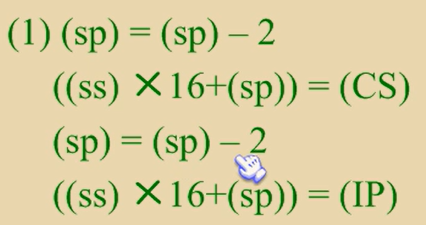

第十章 call和ret
ret指令用栈中的数据，修改ip的内容，实现近转移
cpu执行ret指令时，进行下面的操作
-
(ip) = ( (ss)*16 + (sp) )
-
(sp) = (sp) + 2
pop ip
retf指令用栈中的数据，修改cs和ip的内容，实现远转移
执行retf指令
1.(ip) = ((ss)*16 + (sp))
2.(sp) = (sp) + 2
3.(cs) = ((ss)*16 + (sp))
4.(sp) = (sp) + 2
pop ip
pop cs
call经常与ret配合使用
1.将当前ip或者cs和ip压入栈
2.转移（jmp）
call指令不能实现短转移，call的原理与jmp相同
call 标号:将当前的ip压栈之后转到标号处执行指令
执行时：
1.(sp) = (sp) - 2
((ss)*16 + (sp)) = (ip)
2.(ip) = (ip) + 16位位移
call far ptr 标号

cs = 标号所在段地址，ip = 标号所在偏移地址
call16位寄存器
(sp) = (sp) -2
((ss)*16 + (sp)) = ( ip )
(ip) = (16位寄存器)
call word ptr 内存单元地址
push ip
jmp word ptr
|
|
call dword ptr 内存单元地址
push cs
push ip
jmp dword ptr 内存单元地址
|
|
call 和 ret 的配合使用
call 将ip传输到栈中，执行完子程序之后，
再利用ret接受栈中的ip，然后再返回call的下一个指令位置
MUL
mul命令,汇编语言中的乘法命令
相乘的两个数，要么都是8位，要么都是16位
乘数：指令中给出的 reg/mem
被乘数：固定为 AL 或 AX（根据乘数位数决定）
| 乘数位数 | 被乘数 | 结果存放 | 示例 |
|---|---|---|---|
| 8位 | AL | AX | MUL BL : AX = AL × BL |
| 16位 | AX | DX:AX | MUL BX : DX:AX = AX × BX |
| 32位 | EAX | EDX:EAX | MUL ECX : EDX:EAX = EAX × ECX |
8位乘数结果存放在AX中
16位乘数结果存放在DX,AX中，DX存高位，AX存低位
32位存EDX,EAX
MUL只处理无符号位乘法，有符号位需要用IMUL来计算
mul reg
mul 内存单元 内存单元可以用不同的寻址方式给出
|
|